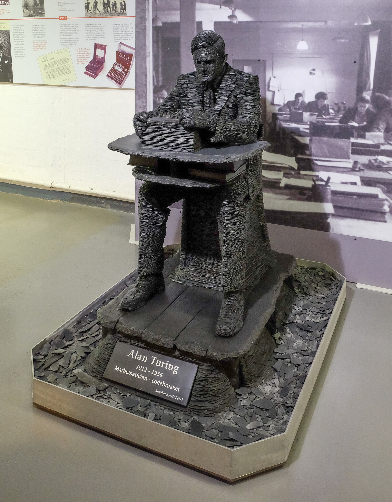
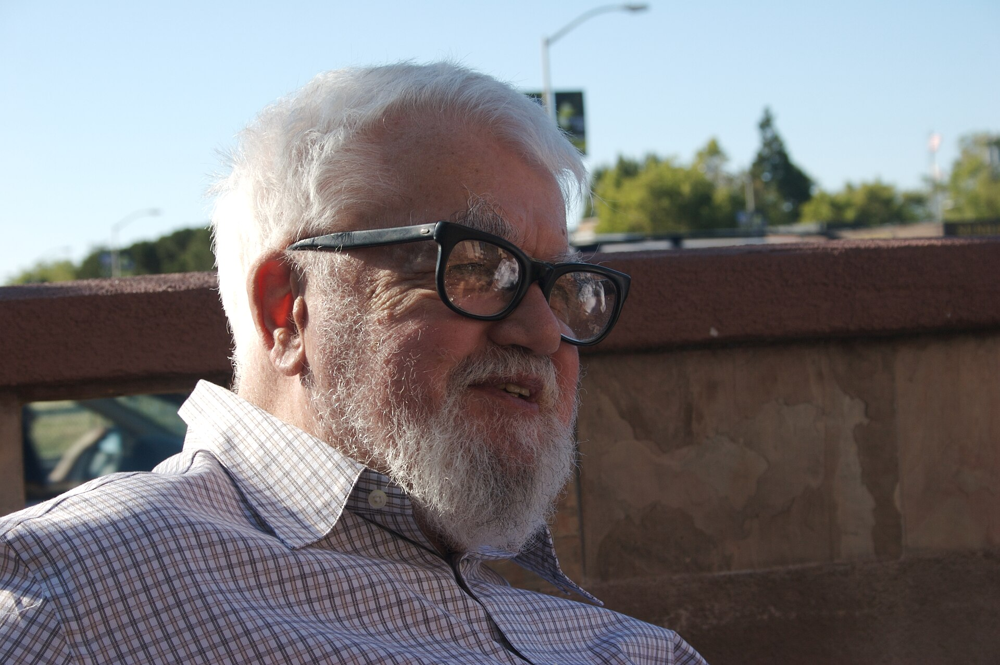
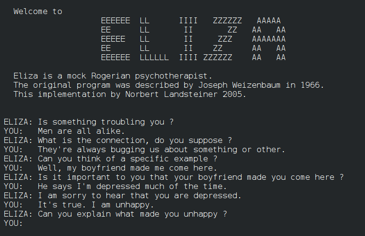
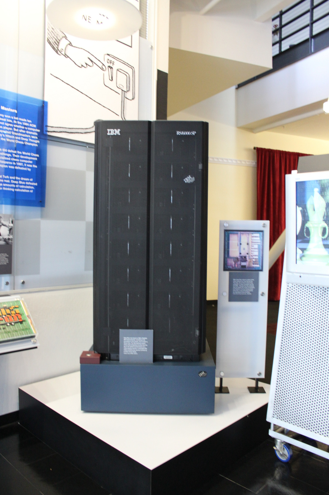
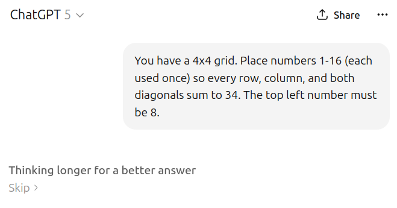
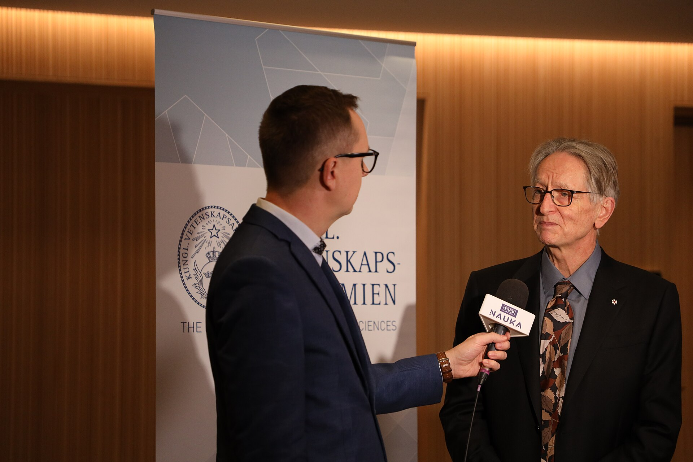
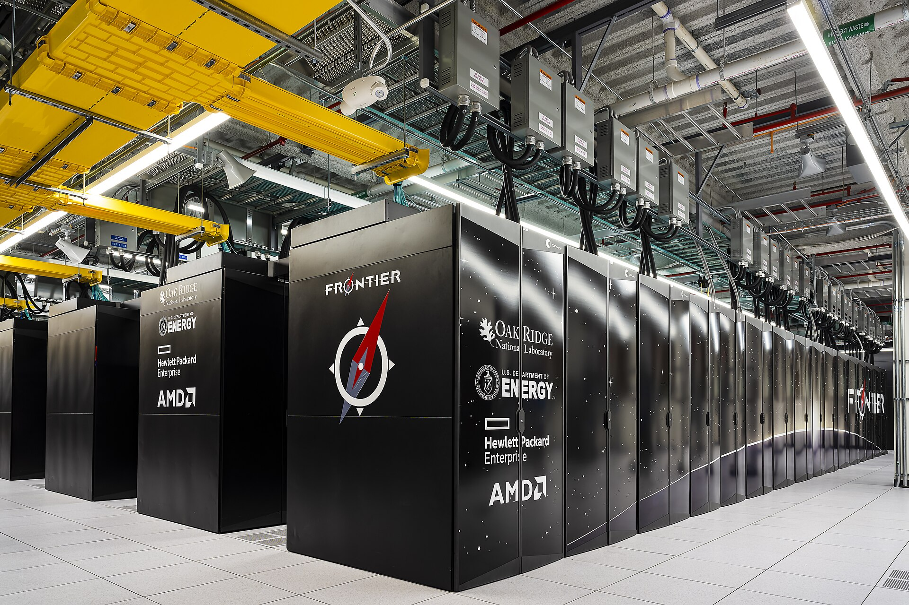
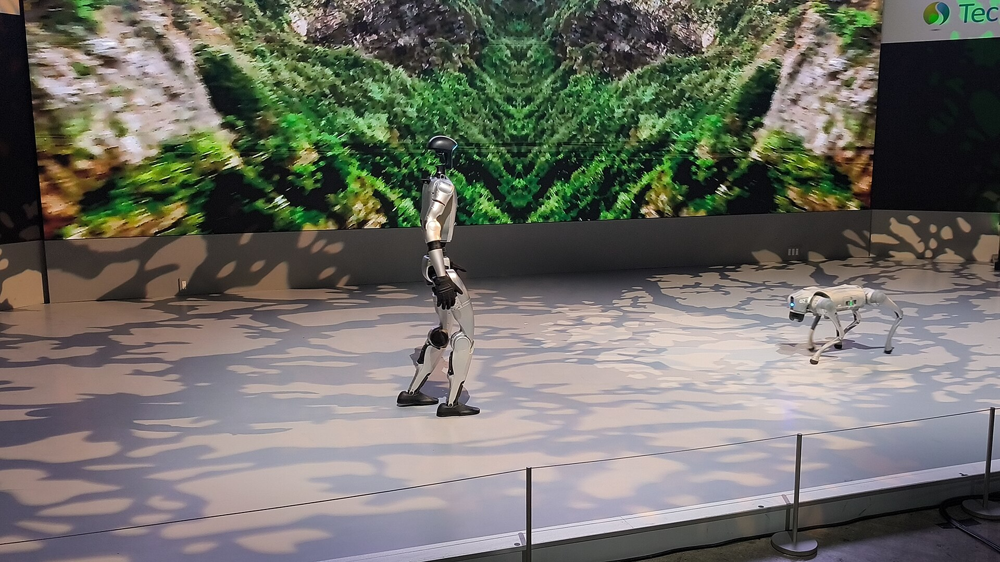

El test de Turing
Turing propone el «juego de imitación»: si no puedes distinguir a la máquina de una persona por escrito, ¿qué más da cómo lo haga?
Historia de la inteligencia artificial
Setenta años intentando que una máquina aprenda. Con dos inviernos, tres revoluciones y una carrera que ahora se mide en semanas.

Punto de partida
Alan Turing no preguntó si las máquinas podían pensar. Preguntó si podíamos distinguirlas de un humano en una conversación. Setenta y seis años después, seguimos discutiendo la respuesta.
«Podemos ver bastante lejos hacia el futuro, pero no lo suficiente como para saber qué pasará mañana.» Alan Turing, 1950
Cronología
La inteligencia artificial nace como disciplina, promete demasiado pronto y descubre su primer límite.
Un grupo de investigadores —entre ellos John McCarthy, Marvin Minsky, Claude Shannon y Nathaniel Rochester— se encierra un verano para estudiar «cómo hacer que las máquinas usen el lenguaje, formen abstracciones y resuelvan problemas».
McCarthy acuña el término inteligencia artificial. La disciplina queda fundada con una ambición enorme y, sobre el papel, muy poco tiempo.

Frank Rosenblatt construye el Mark I Perceptron, financiado por la Marina de EE. UU. No se le programan reglas: ajusta sus pesos a partir de ejemplos.
Es la primera semilla del aprendizaje automático. También el origen de una expectativa desmedida: la prensa llegó a decir que pronto sería capaz de «caminar, hablar, ver y ser consciente de su existencia».

Joseph Weizenbaum escribe ELIZA, un programa que imita a un psicoterapeuta devolviendo las frases del usuario en forma de pregunta.
No entiende nada. Y aun así, mucha gente empezó a contarle cosas íntimas. Weizenbaum se asustó con su propia criatura: fue de los primeros en advertir del riesgo de que confundamos conversación con comprensión.

Turing propone el «juego de imitación»: si no puedes distinguir a la máquina de una persona por escrito, ¿qué más da cómo lo haga?
Minsky y Papert demuestran los límites matemáticos del perceptrón simple. El golpe es más político que técnico, pero la financiación empieza a cerrarse.
El Reino Unido concluye que la IA no ha cumplido sus promesas y retira el apoyo. DARPA hace lo mismo en EE. UU. Es el primer invierno.
Los años difíciles
Cuando las promesas superan a los resultados, el dinero desaparece. Pasó dos veces. En medio, alguien encontró la pieza que faltaba.
La era de los sistemas expertos. XCON, en Digital, configura pedidos mejor que un humano. Japón lanza su proyecto de quinta generación. Parece que la IA por fin vende… hasta que el mantenimiento de miles de reglas se vuelve inmanejable y el mercado de las máquinas Lisp se hunde en 1987.
Backpropagation. Rumelhart, Hinton y Williams popularizan el algoritmo que permite entrenar redes con varias capas ajustando los pesos hacia atrás. La idea es de los años 70, pero ahora hay datos y ordenadores. Tardará 26 años en explotar.
Durante los años noventa, mencionar «redes neuronales» en una solicitud de financiación era una forma rápida de que te la rechazaran. La técnica que acabaría ganando ya existía desde 1986.
1997–2011
La IA vuelve por donde el público la entiende: venciendo a campeones del mundo en juegos de mesa y concursos de preguntas.
El ajedrez cae primero: IBM Deep Blue gana el duelo 3,5 a 2,5 al campeón mundial Gari Kaspárov. No «piensa»: evalúa unos 200 millones de posiciones por segundo.
Fue fuerza bruta, no aprendizaje. Pero el titular dio la vuelta al mundo y cambió la conversación pública sobre las máquinas.

El go se resistía a la fuerza bruta: demasiadas posibilidades. AlphaGo, de DeepMind, combina redes neuronales con búsqueda en árbol y vence a Lee Sedol 4–1.
En la segunda partida juega el movimiento 37, que los comentaristas tomaron por un error. Era brillante. Ahí quedó claro que el aprendizaje profundo ya no solo reconocía imágenes: empezaba a intuir.

El artículo «Attention Is All You Need» propone una arquitectura que procesa toda la secuencia a la vez, en lugar de palabra por palabra. Es más rápida, escala mejor y se entrena en paralelo.
Todos los grandes modelos de lenguaje que usas hoy —y esta misma web— descienden de esas ocho páginas.
2018 → 2020
La escala se convierte en la estrategia: más parámetros, más datos, más cómputo. GPT-3 llega a 175.000 millones de parámetros y empieza a hacer cosas para las que nadie lo había entrenado explícitamente.
La clave
No hay reglas de gramática ni base de conocimiento. Solo un objetivo estadístico humilde que, a gran escala, arrastra capacidades que nadie programó.
2022–2024
En tres años, la IA pasa de laboratorio a producto de consumo masivo, y de responder texto a razonar antes de responder.
OpenAI publica una «demo de investigación» construida sobre GPT-3.5. En dos meses supera los 100 millones de usuarios: el producto de consumo que más rápido creció hasta entonces.
El mundo descubre que se puede conversar con un modelo. También descubre, muy rápido, que se lo inventa con total seguridad.

Los modelos dejan de ser solo texto: ven imágenes, generan vídeo, escriben y ejecutan código, navegan. Los pesos abiertos (Llama, Mistral, Qwen, DeepSeek) acercan la frontera a cualquiera con una GPU.
En 2024 llega el primer modelo que «piensa» antes de contestar —o1, en septiembre— y en octubre el Nobel de Física reconoce a Hopfield y Hinton las bases de las redes neuronales.

2025–2026
Ya no se trata de escribir mejor: se trata de hacer. Los modelos razonan, usan herramientas, abren pestañas, ejecutan código y trabajan durante horas sin supervisión.
Los modelos de razonamiento se generalizan y llegan los agentes: asistentes que planifican, consultan fuentes y ejecutan tareas de varios pasos (como este mismo entorno, que escribe archivos y los verifica).
Los modelos abiertos, además, dejan de ir por detrás: DeepSeek R1 demuestra en enero que se puede competir con mucho menos presupuesto.
Agentes
Editar un repositorio, revisar un PDF, rellenar un formulario, investigar durante media hora y devolver un informe con fuentes.
Coste
El precio de una consulta equivalente ha caído de forma brutal en tres años. Eso es lo que ha permitido que la IA llegue a todo el mundo.
Anthropic sube un peldaño en la gama Opus: mejores agentes, más código y más criterio.
OpenAI presenta su modelo más capaz, orientado a uso de ordenador, ciberseguridad y trabajo profesional.
Dos modelos con equilibrios distintos de capacidad y coste, el mismo día que Anthropic publica Opus 5.5. La cadencia ya es mensual, no anual.
Una mejora que roza al modelo tope en programación agéntica y uso de ordenador, a una fracción del precio. Doce días después, aquí seguimos.
Todo esto depende de algo muy físico: fábricas llenas de GPU y enormes cantidades de electricidad. El cuello de botella ha dejado de ser la idea y se ha vuelto el hardware.
Los superordenadores que entrenan estos modelos consumen lo que una ciudad pequeña. La IA se ha convertido también en un problema de energía.

19 de octubre de 2026
Capacidad enorme, límites evidentes. Cuatro cosas que son verdad a la vez.
Lo que funciona
Donde más valor hay hoy: programar, revisar, documentar y automatizar tareas repetitivas con un humano supervisando.
Lo que falla
Un modelo fluido y seguro de sí mismo sigue siendo capaz de inventarse una cita, una ley o una función que no existe.
El debate
No sabemos del todo por qué un modelo responde lo que responde, ni cómo repartir el valor del contenido con el que se entrenó.
Lo que viene
Esto ya no es historia: es prospectiva. Tendencias con fundamento, no predicciones con fecha.
Los robots humanoides han pasado de ferias a fábricas piloto. El cuello de botella ya no es el modelo, sino la destreza física, la batería y el coste por unidad.
Si eso se resuelve, el trabajo repetitivo físico es el siguiente en la lista.

01 · Capacidad
Los laboratorios discuten si estamos cerca. Lo seguro: los benchmarks se agotan más rápido de lo que se crean nuevos, y eso ya pasó otras veces.
02 · Infraestructura
El futuro de la IA se decide en centrales eléctricas y fundiciones. La ventaja competitiva es cada vez más industrial.
03 · Regulación
Europa ya legisla por riesgo; EE. UU. va por casos. La pregunta abierta es si la norma llega antes o después que el siguiente modelo.
04 · Ciencia
Predicción de proteínas, diseño de fármacos y materiales, matemáticas asistidas, diagnóstico por imagen. Ahí la IA no compite con las personas: amplía lo que podemos investigar.
Aviso honesto: esta sección es prospectiva. Los hechos de las secciones anteriores están fechados y contrastados; lo de aquí son tendencias y debate, no anuncios.
Turing preguntó si una máquina podía parecer humana. La pregunta de 2026 es otra: ¿qué queremos delegarle?
Setenta años después, la parte difícil ya no es la técnica. Es decidir para qué la usamos.
Créditos y fuentes
Todas las imágenes son libres y están descargadas en local. Enlaces a su ficha original:
Datos contrastados con: openai.com, anthropic.com, Wikipedia, Britannica, Computer History Museum, DeepMind y los artículos originales citados. Fecha de cierre: 19 / 10 / 2026.